AnyDesk
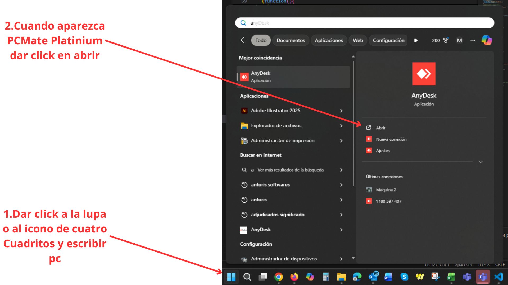
Fashion Stitch Noah
Abrir AnyDesk - Software de acceso remoto
Disponible en la barra de abajo o al tocar la tecla Win, escribimos pc y aparecerá, luego damos en abrir.

Disponible en la barra de abajo o al tocar la tecla Win, escribimos pc y aparecerá, luego damos en abrir.
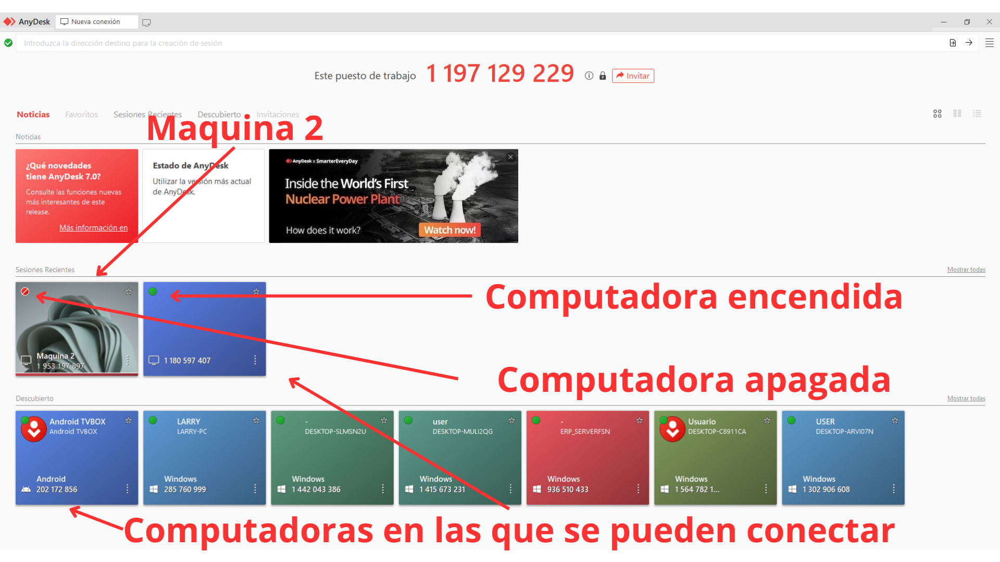
En Sesiones recientes aparecen la computadoras a las que podemos conectarnos, si el circulo esta en rojo esta apagada, si esta en verde entonces encendida, necesitamos acceder a la Maquina 2, entonces encendemos esa computadora.
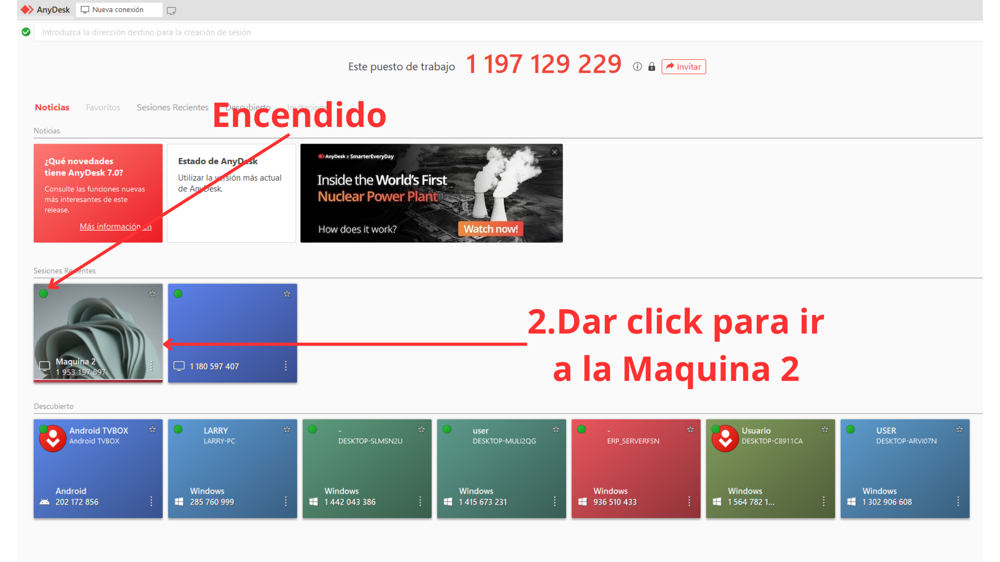
Una vez encendida la Maquina 2, su circulo sera verde, esto indica que esta encendia, clickeamos la Maquina 2 para conectarnos.
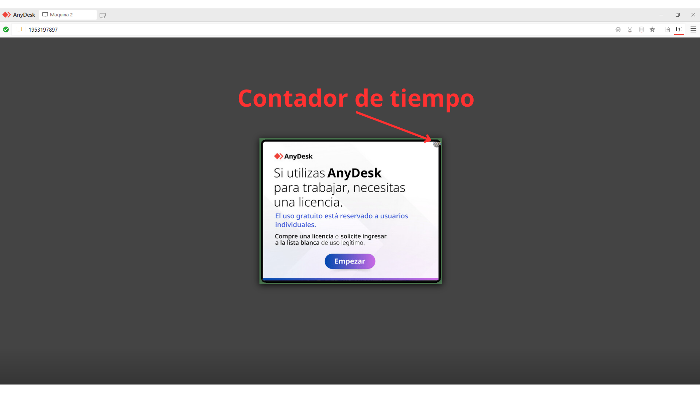
Aparecera una pantalla de carga de 1,000 segundos para poder usar la Maquina 2, esperamos y oprimimos la equis para usar la Maquina 2.
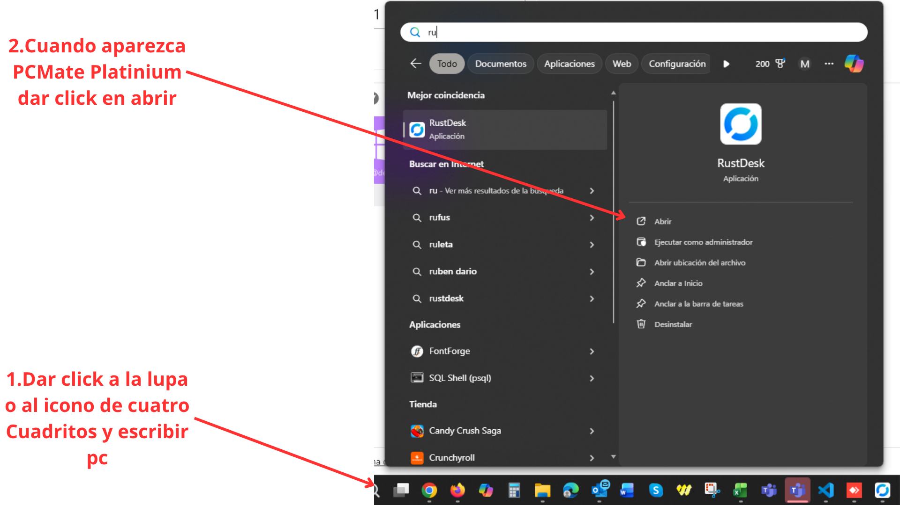
Disponible en la barra de abajo o al tocar la tecla Win, escribimos pc y aparecerá, luego damos en abrir.
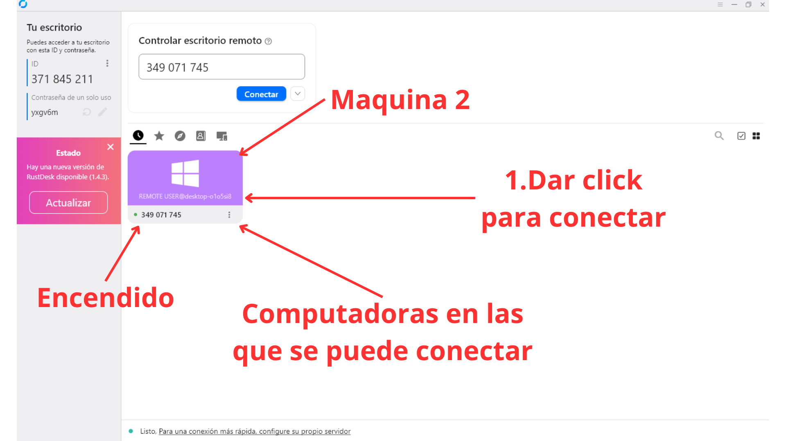
En la pantalla pruincipal observamos un recuadro similar al de AnyDesk, que hace referencia tambien a la Maquina 2, entonces una vez cerrado la pantalla de carga de AnyDesk, podemos usar RustDesk para acceder a la Maquina 2 dando click a este recuadro.
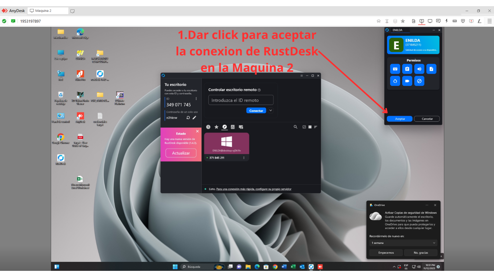
En la ventana de AnyDesk se observa la Maquina 2 y al intentar concectar desde RustDesk pide confirmacion, aceptamos la confirmacion para que RustDesk se conecte.

Disponible en la barra de abajo o al tocar la tecla Win, escribimos pc y aparecerá, luego damos en abrir.
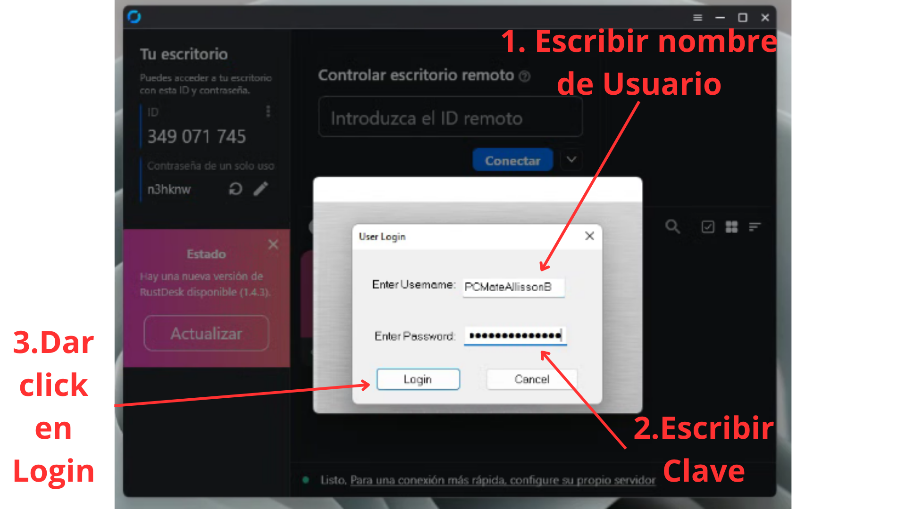
En UserName ingresar el nombre de usuario PCMateAllissonB y en la clave el PCMateAllissonB2025, luego dar click en Login u oprimir la tecla Enter.
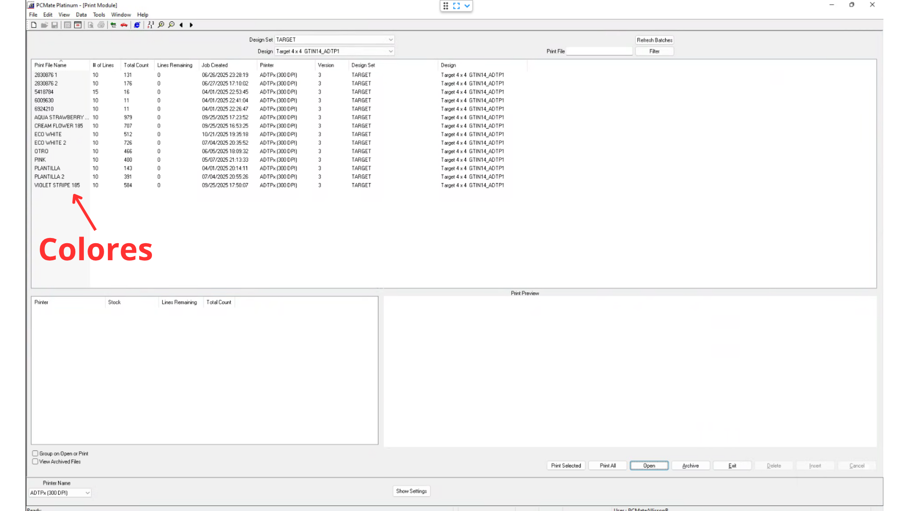
En esta pantalla aparecen los colores disponibles en PCMate de Target, debido a que este Stiker se crea, no se descarga como Walmart, dar click al color deseado, en este caso VIOLET STRIPE.
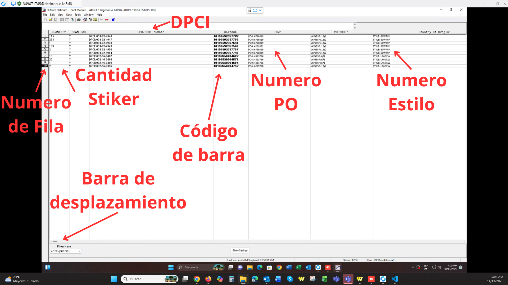
En QUANTITY se puede cambiar la cantidad de Stikers, en UPC/DPCI number esta DPCI, barcode debe coincidir con el Layout, PO#: numero de PO, todo es editable pero no debe cambiarse, a excepcion del la cantidad de Stikers y numero de PO que se desea imprimir.
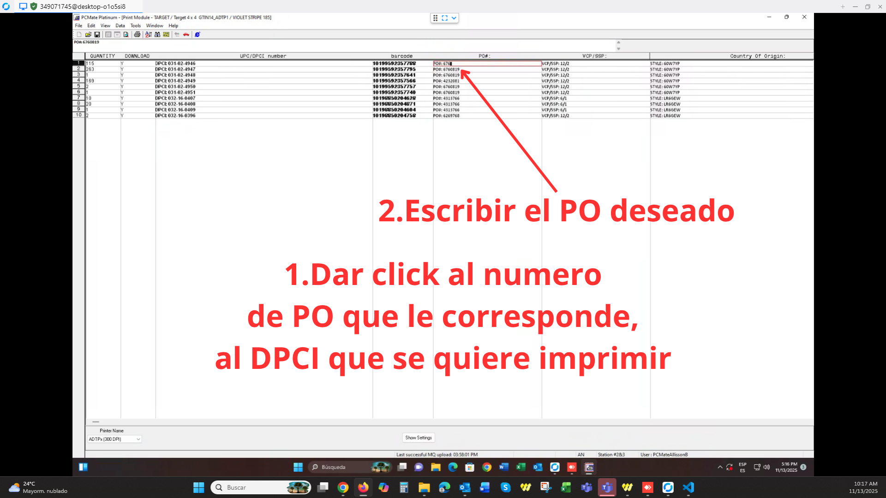
Buscamos el DPCI que se desea imprimir, una vez encontrado dar click al numero de PO que le corresponde, y luego escribir el numero de PO deseado.
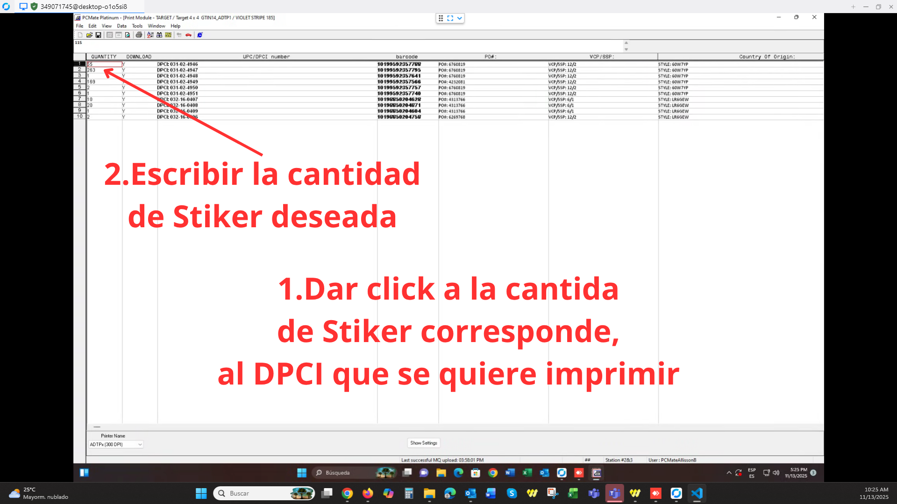
Escribimos la cantidad que se quiere imprimir de igual forma, correspondiente al DPCI.
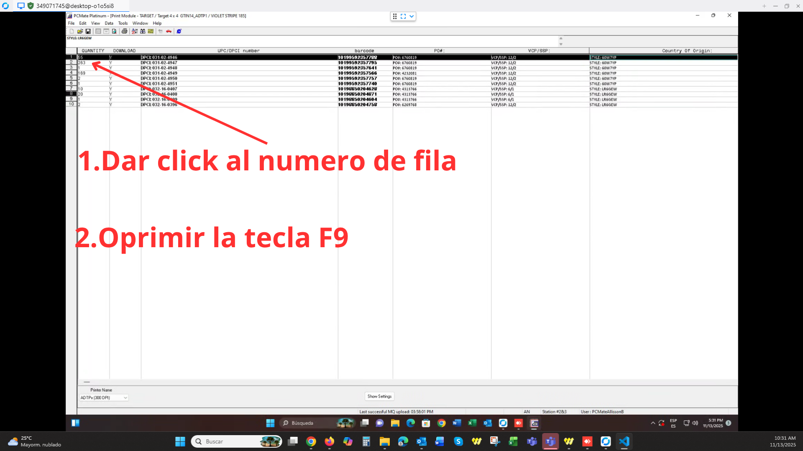
Tocamos la fila del DPCI que quermos imprimir y oprimimos la tecla F9.
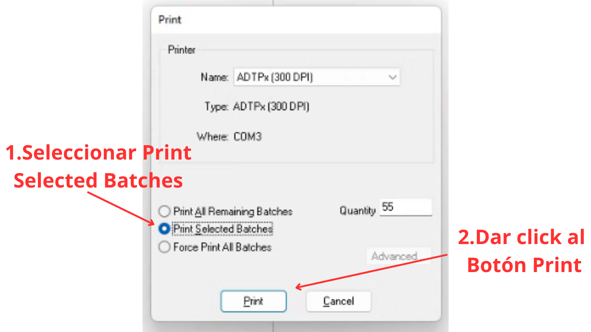
En esta ventana se imprime el DPCI, damos click donde dice Print Selected Batches, para imprimir lo que esta seleccionado (marcado de negro), luego damos click en el boton Print, esto imprimira el DPCI completo con la cantida escrita.

En el caso de Target, se imprime todo la cantidad escrita, en la pantalla verde aparecen 2 numeros uno es de los stikers impresos y el otro de orden total de impresion.

Se oprime una vez, el boton circular de enmedio, para pausar la impresion.

Se oprimen dos veces el boton inferior izquierdo que tiene una flecha, en la imagen se muestra.

La pantalla ahora es de color blanco indicando que la cancelación fue aceptada, puedes tocar dos veces el boton circular de en medio para sacar un stiker en blanco y cortar mas comodo lo impreso.